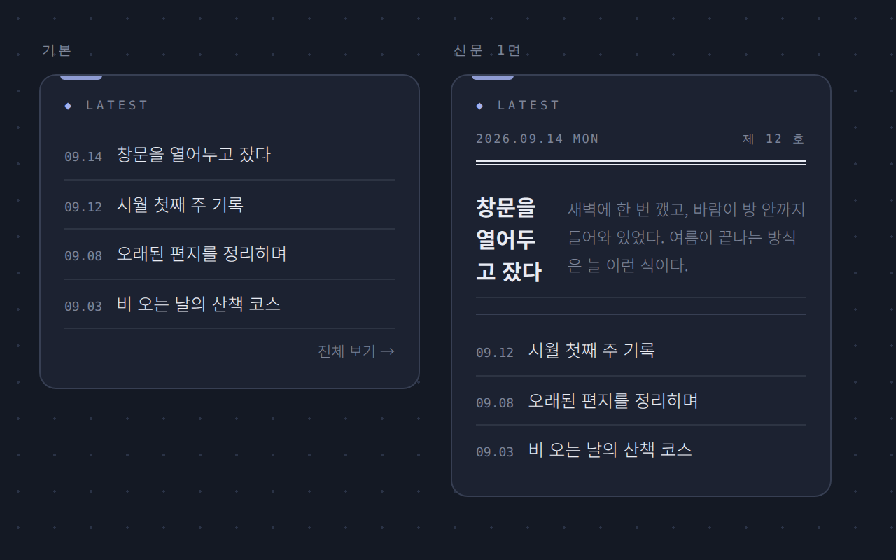
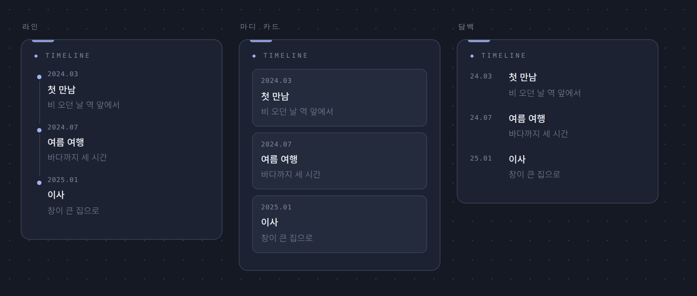
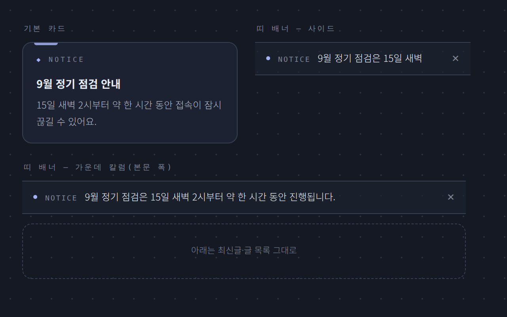
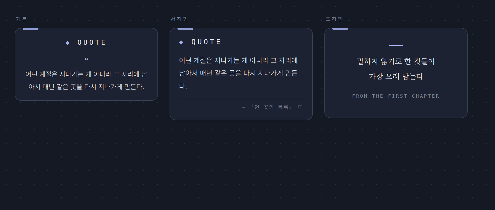

러브로그 · 위젯
글·기록 위젯
최신글
최근 글 목록. ✎에서 개수, 특정 카테고리만(여러 개 가능), 앞머리 모양(◈ 대신 ✦ ♥ 등)을 정합니다.
스킨 「신문 1면」 — 첫 글만 제목 크게 + 발췌 두 줄, 그 아래 나머지는 날짜와 제목만. 맨 위에 보는 날 날짜와 「제 N 호」(N = 전체 글 수)가 붙고, ✎에서 끌 수 있습니다. 비밀글은 발췌가 없어 제목만 나옵니다.

사진 자리img/ll-w-latest-news.png📌 고정글 · ★ 대표글
- 고정글 — 고정글만 따로 두는 카드. 최신글의 「고정글 함께 표시」를 끄면 완전히 분리됩니다.
- 대표글 — 추가하면 글 목록 제목 옆에 ☆가 생깁니다. 눌러서 켠 글을 N개 전시(글쓰기 화면의 체크로도 지정).
타임라인
연표 위젯. 항목마다 날짜·제목·로그, 디자인 3종(라인·마디 카드·담백), 점 모양 이모지 자유, ✨움짤·↻반복·최대 높이 지원.

사진 자리img/ll-w-timeline.png공지 · 글
- 공지 — 제목+내용 고정 카드. 스킨 「띠 배너」를 고르면 카드 대신 얇은 한 줄 띠가 됩니다. 가운데 칼럼에 두면 본문 폭의 띠가 됩니다. 방문자용 ✕ 닫기를 켜면 닫은 방문자의 브라우저에서만 숨고, 내용을 고치면 다시 보입니다.
- 글 — 제목+자유 텍스트, 고정 카드 느낌 없이 담백하게. 스킨 편지지·포스트잇·타자기.

사진 자리img/ll-w-notice-band.png인용구
- ✨ 움짤 효과(타이핑)를 켜면 문장이 한 글자씩 나타납니다.
- 스킨 「서지형」 — 따옴표 없이 문장 → 얇은 선 → 오른쪽 출처 한 줄. 출처 아래 주소를 적으면 출처가 링크가 됩니다.
- 스킨 「표지형」 — 라벨과 따옴표를 빼고 여백을 크게, 본문만 명조로. 책 속표지 느낌.

사진 자리img/ll-w-quote-skins.png